Home
Blog
Consulting
Categories
All
(31)
AI
(1)
Analysis
(2)
OSM
(1)
R
(20)
ai
(2)
analysis
(13)
azure
(2)
bayesian
(2)
docker
(3)
shiny
(1)
statistics
(8)
survival
(1)
time series
(4)
Blog
Find the shooter
Bayesian numerical estimation of fat-tailed distributions
analysis
R
bayesian
A palace in the middle of a fictional city is protected by a large wall. During the night, in protest, a citizen randomly opens fire at the palace walls with a machine gun…
May 21, 2025
Dean Marchiori
Can you trust what AI is telling you?
A plea for reproducible workflows for GenAI analysis
analysis
R
AI
Well trust is built in part, on transparency.
May 15, 2025
Dean Marchiori
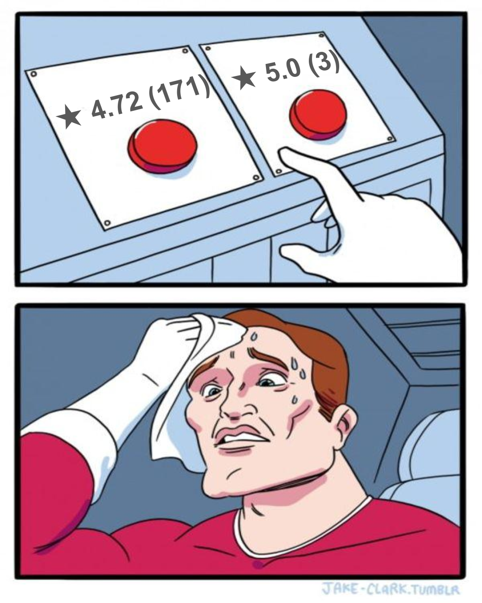
★★★★★
Choosing an Airbnb using mathematical analysis of review data
analysis
R
bayesian
Have you ever looked for a hotel, Airbnb, restaurant and checked out the reviews?
Mar 5, 2025
Dean Marchiori
Survival Analysis
Pearls and pitfalls for time-to-event modelling
survival
analysis
The use of classification algorithms to model binary response data are so ubiquitous there is a risk that in some settings this type of model is inappropriate. In cases when…
Feb 20, 2025
Dean Marchiori
How AI Works
For the heavily time-constrained
ai
Do you ever wake up at night, slightly disoriented, breathless, wondering how artificial neural nets are able to optimise weights without encountering discontinutities?
Feb 6, 2025
Dean Marchiori
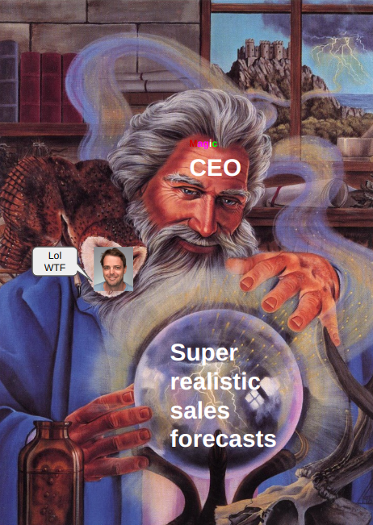
The CEO’s Guide to Predicting the Future
Time Series Analysis Made Simple
time series
analysis
I had an interesting discussion with a client recently about the value proposition for collecting large amounts of time series data. I thought it might be worthwhile…
Jan 8, 2025
Dean Marchiori
Integrating R with Modern Tech Stacks
A Practical Guide to Using R and Docker for Integrating Statistical Analysis into Modern Tech Stacks
docker
R
There seems to be a subconscious deterrent from using specialised tools like R as part of a production or core tech stack, as if it’s somehow not compatible with other forms…
Dec 1, 2024
Dean Marchiori
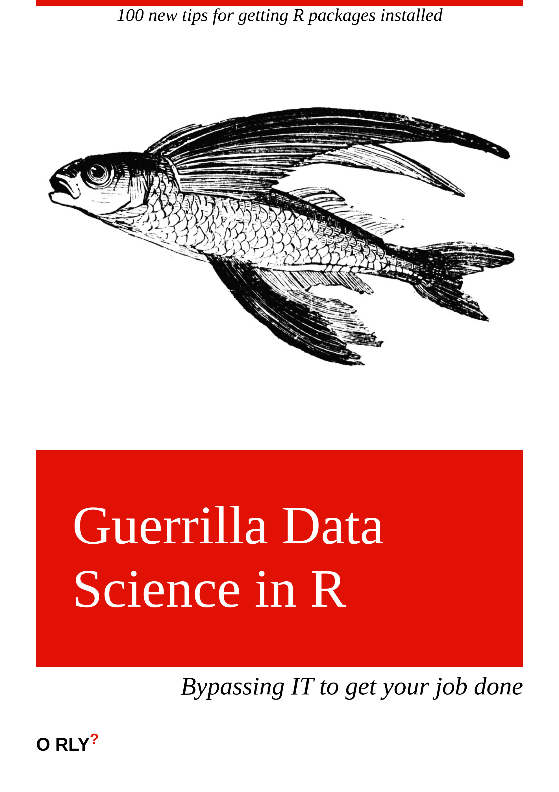
5 tips for dealing with IT
Getting data science done with your IT team
analysis
No plan survives first contact with IT
Nov 18, 2024
Dean Marchiori
OceaniaR 2024
R Development and Open Source Software Hackathon - Melbourne 2024
analysis
R
The first ever OceaniaR meeting took place this week in Melbourne!
Oct 11, 2024
Dean Marchiori
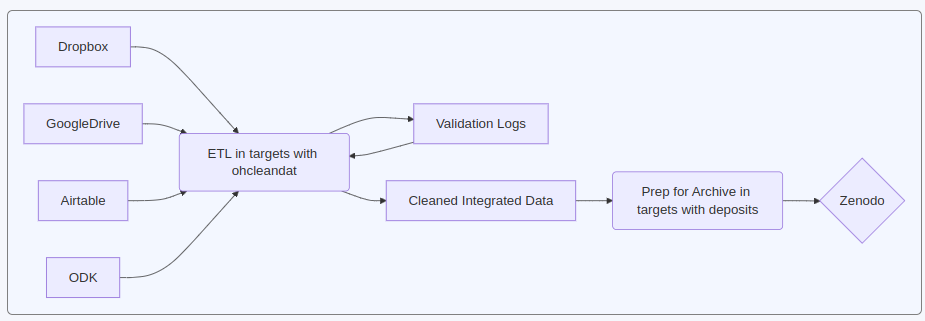
Data Systems and Analytics for Vector-Borne Disease Threat Reduction
A real-world case study of reproducible workflows
analysis
R
Earlier this year I was fortunate enough to work with EcoHealth Alliance on a major project focused on two WHO priority zoonoses, Rift Valley fever virus and Crimean-Congo…
Oct 11, 2024
Dean Marchiori
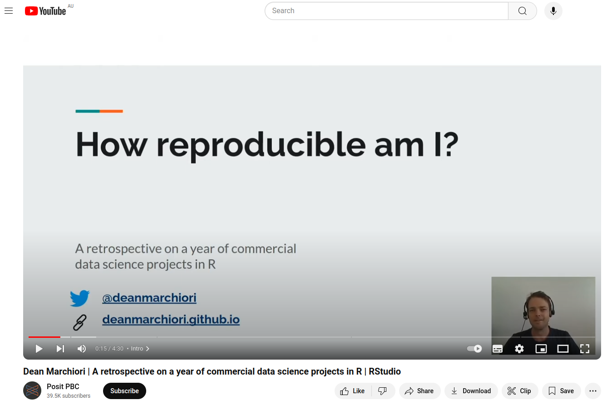
Data Science Workflows: Choosing the Right One
Do a Repro-Retro
analysis
In previous posts I have discussed frameworks for thinking about data science projects. When it comes to actually writing R code, there are a number of
coding
workflows you…
Oct 8, 2024
Dean Marchiori
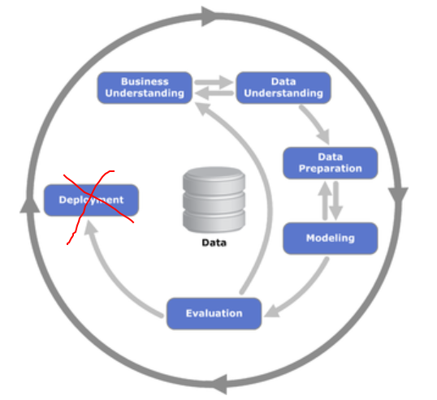
Data Science Workflows: Inner Loop vs Outer Loop
Experiment and Deploy
Analysis
In a previous post I discussed the charming nostalgia of CRISP-DM as a data analysis workflow choice.
Oct 4, 2024
Dean Marchiori
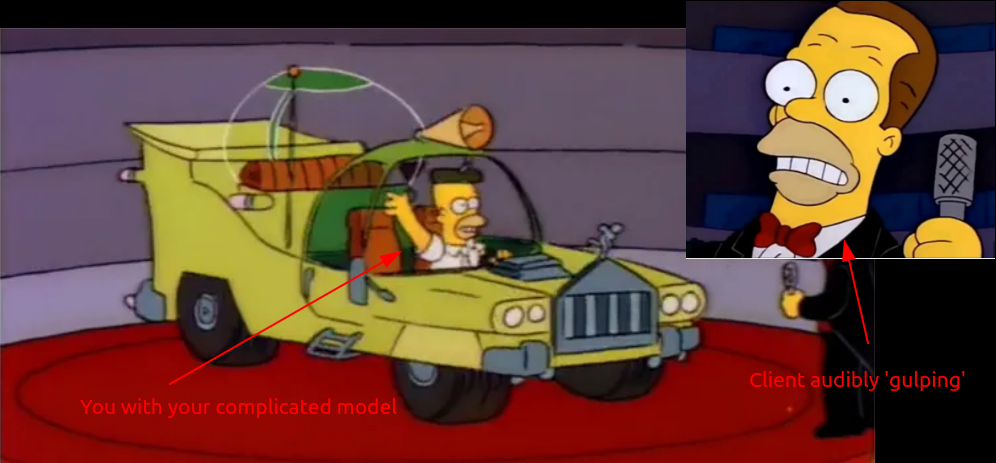
Data Science Workflows: CRISP-DM
90’s nostaglia that holds up
Analysis
The cross-industry standard process for data mining (CRISP-DM) is a process model and framework for carrying out data mining projects.
Sep 26, 2024
Dean Marchiori
Is ChatGPT is a bullshit machine?
And what you should do about it
ai
A recent paper published in ‘Ethics and Information Technology’ titled
ChatGPT is bullshit
1
is fast becoming one of my favorite papers. Not least because it uses the word…
Jun 19, 2024
Dean Marchiori
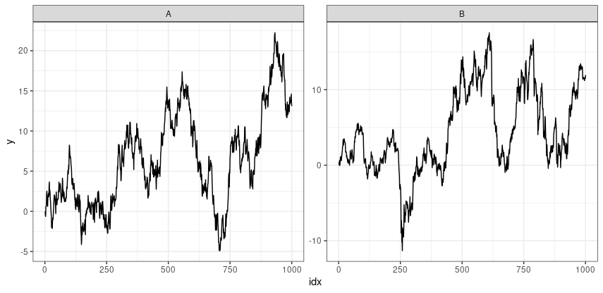
Is the share market just random noise?
Modelling market prices using a random walk
R
time series
Earlier in my career, in the afternath of the GFC I worked as trader for an online share trading platform. Everyday I would get blasted with a firehose of emotion from…
Jan 4, 2024
Dean Marchiori
Geolocating Sydney’s weirdest property
Using Open Street Map and R to geolocate an image
R
OSM
A defiant Aussie family has refused to sell their farm-land property despite the entire neighborhood being converted into a new housing estate.
Sep 17, 2023
Dean Marchiori
Deploying Enterprise Scale AI & Machine Learning Infrastucture
5 things you need to know before using Azure ML Studio
analysis
statistics
Are you about to scale up your data analytics team to do more AI/ML work? Here are 5 things you need to know up front to make your life easier.
Sep 11, 2023
Dean Marchiori
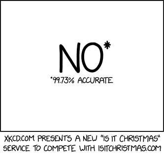
Three Questions to Ask Your Data Scientist
Are your predictive models doing what you think they are?
analysis
statistics
If you have hired a data scientist or run a team of data people, you may not be an expert yourself (that’s why you hired an expert, right?). So how do you know you are…
Jul 12, 2023
Dean Marchiori
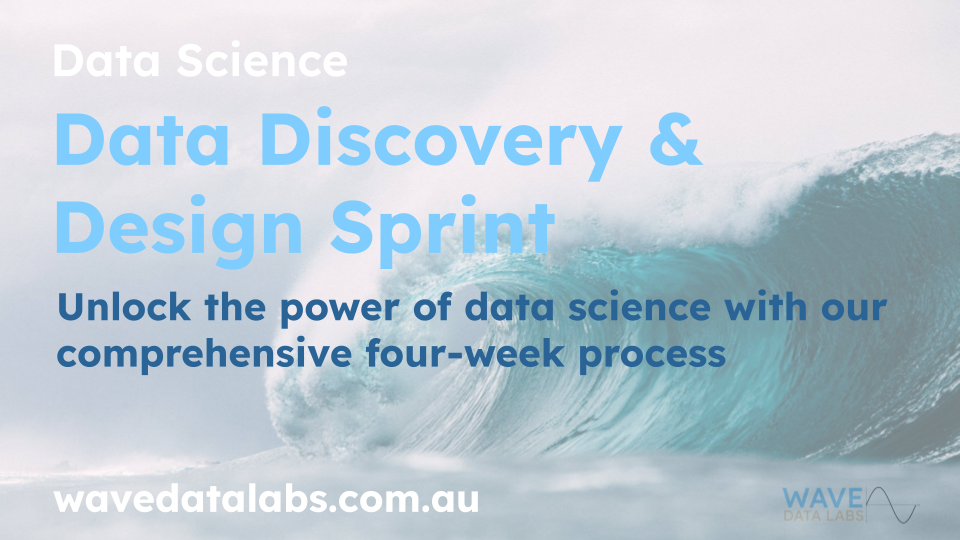
Why your data science projects are failing
and what you can’t do about it
analysis
The most undervalued skill in delivering value with data science teams is picking projects that are likely to succeed. There is no shortcut - it takes years of hard earned…
Jun 26, 2023
Dean Marchiori
Man vs Machine Learning
I went head-to-head with Microsoft’s AutoML platform in a predictive modelling challenge.
R
azure
time series
Over the past few years I have been doing more and more work in Microsoft Azure and the Azure Machine Learning Studio. One feature of the Azure ML studio is an automated…
Jun 2, 2023
Dean Marchiori
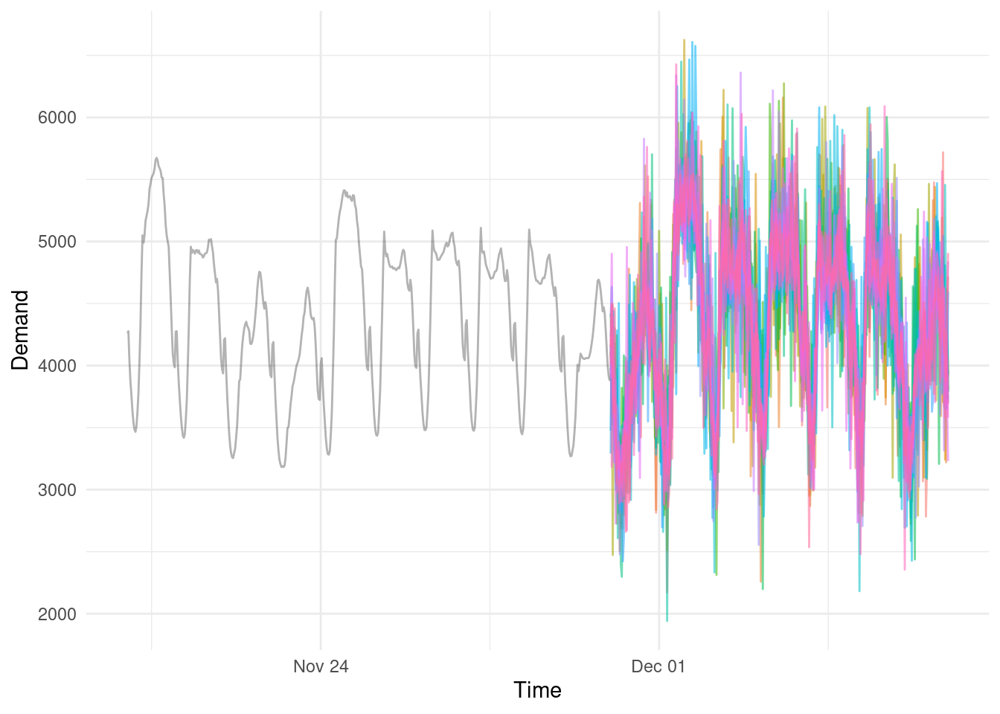
Level up your Forecasting
Quantify uncertainty with distributional forecasts
R
statistics
time series
This is a time series data set of half-hourly electricity demand for Victoria, Australia
1
. You may not care about electricity forecasting, but there is probably some…
May 29, 2023
Dean Marchiori
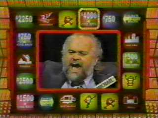
Random Number Generator Testing
A tale of an unemployed ice-cream man, secret societies and a $10 radio
R
statistics
We had really interesting discussion with a company recently who needed a random number generator certified.
May 19, 2023
Dean Marchiori
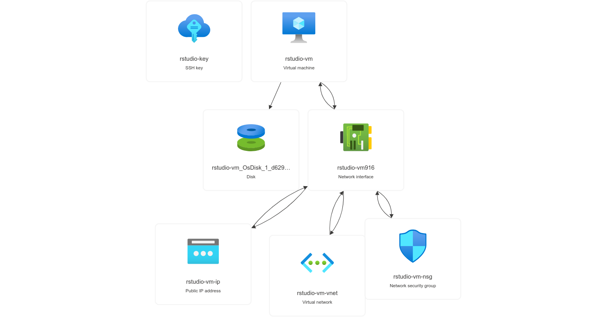
Deploy Your Own R Data Science Lab in the Cloud
R
azure
In a previous post I linked to a project that makes it easy to deploy and extend an existing Rocker Project Docker image to quickly set up a fully featured RStudio Server…
Mar 26, 2023
Dean Marchiori
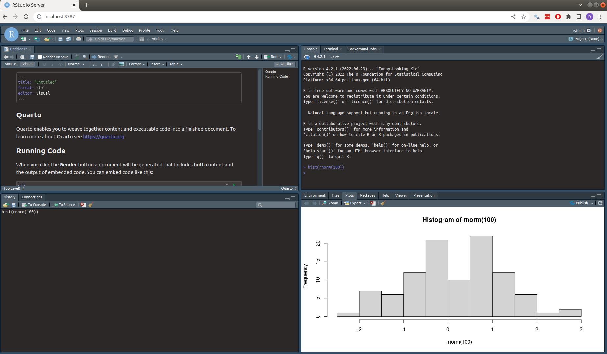
Building your own R Data Science Lab in the browser
R
docker
Most R users probably just run RStudio Desktop from Posit on their local computers. This involves manually installing R, RStudio and all other packages.
Mar 15, 2023
Dean Marchiori
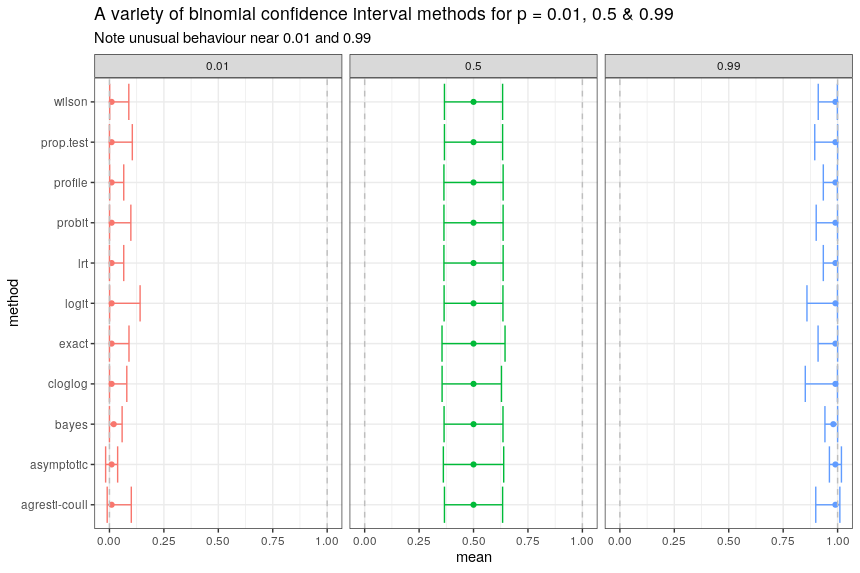
Beware of Boundaries in Binominal Proportion Confidence Intervals
R
statistics
Binomial proportion confidence intervals are often employed when attempting to perform tests for significance, or sample size calculations around sample measurements…
Mar 13, 2023
Dean Marchiori
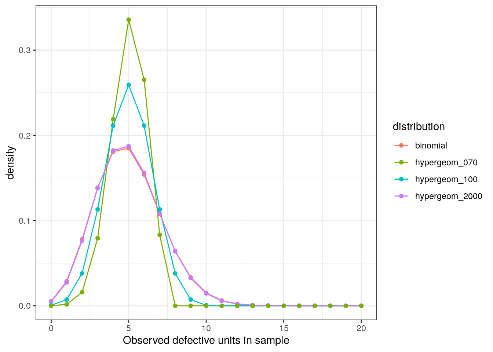
When should you be using the Hypergeometric distribution in practice?
R
statistics
We have a manufacturing process in the day job that is subject to sample auditing.
Feb 20, 2023
Dean Marchiori
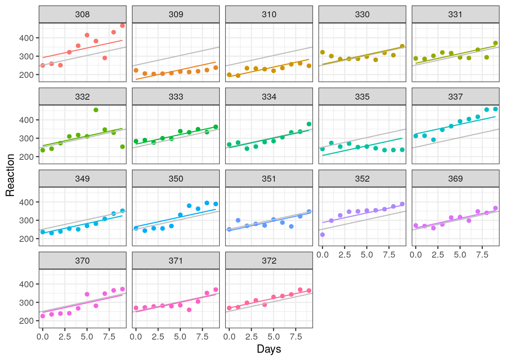
Prediction Intervals for Linear Mixed Effects Models
R
statistics
A recent project with repeated measures data involved fitting a random intercept term, and eventually making predictions for new groups not in the training sample.…
Feb 6, 2023
Dean Marchiori
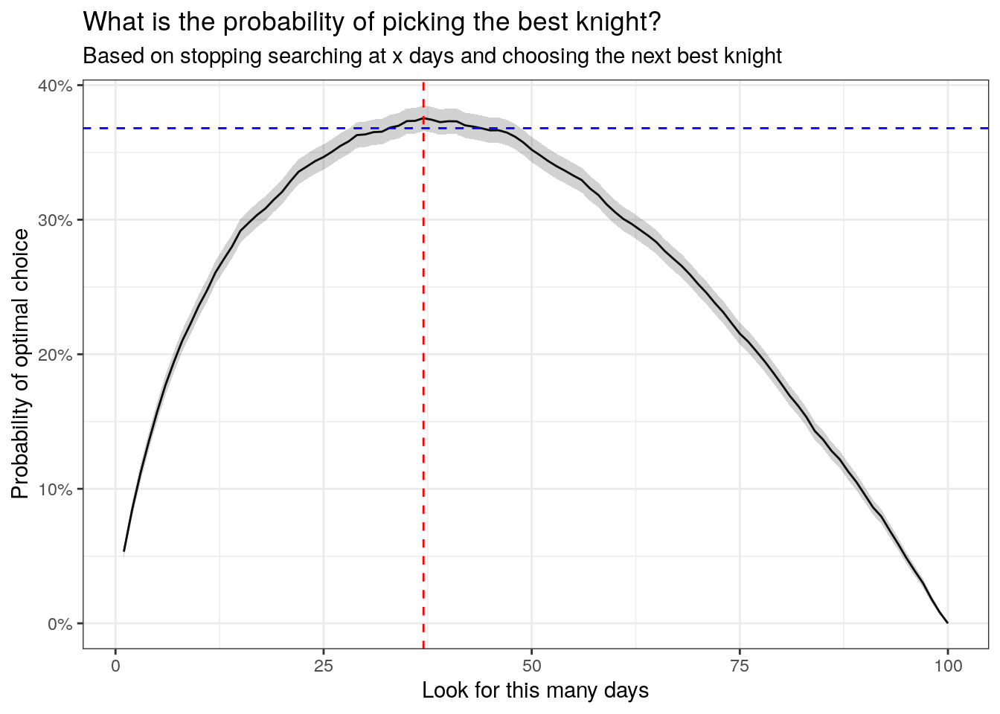
Optimal Stopping Problems
R
statistics
The August 2022 edition of Significance Magazine posts a challenge:
Sep 28, 2022
Dean Marchiori
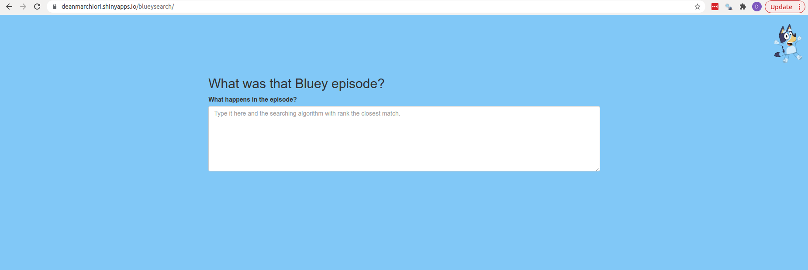
What was that Bluey Episode?
R
shiny
Does your child explain Bluey episodes to you but you have no idea what episode they are talking about and can’t handle flicking through all 131 of them?
Feb 3, 2022
Dean Marchiori
Running Shiny in a Docker container
R
analysis
docker
Basic minimal example for running shiny in Docker. It is assumed you have Docker installed.
Jan 17, 2022
Dean Marchiori
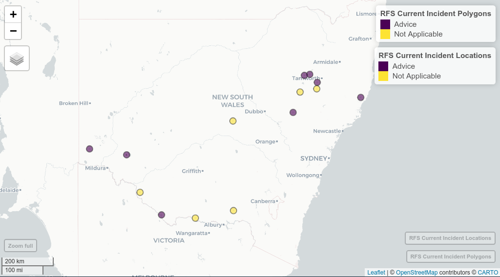
Mapping NSW Fire Incidents in R
R
This feed contains a list of current incidents from the NSW RFS, and includes location data and Major Fire Update summary information where available. Click through from the…
Jan 17, 2021
Dean Marchiori
No matching items